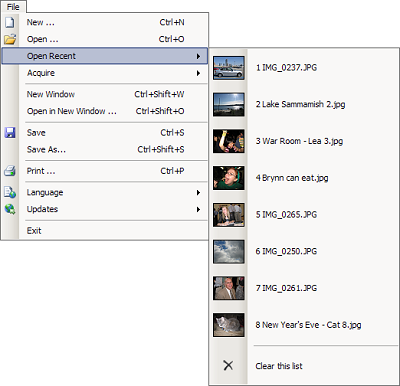
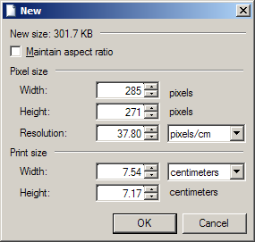
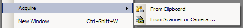
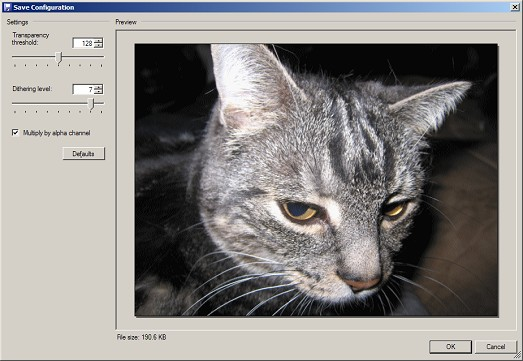
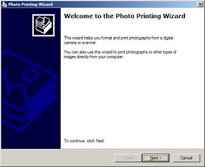
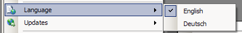
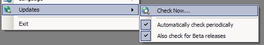
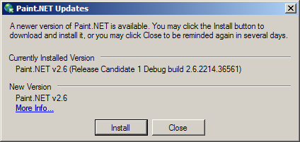

File menu
The file menu provides access to open, acquire, and save images in Paint.NET. These options behave similarly to other document and image editing programs.
-

-
New
This allows you to create a new, blank image. The default size is 800 x 600, or the size of any image that has been copied to the clipboard. The following dialog is displayed when you click on this menu item. You may use the "Maintain aspect ratio" checkbox to enforce that the ratio between width and height remains the same. The new size of the image is also displayed at the top of the dialog box; this can be used to determine how much memory the image will use, but may not reflect how large it will be when you save it to disk (it will usually be smaller).

-
Open
This allows you to open an image, which will close the current image you're working on. It works the same as the Open facility in just about any other document-oriented application.
-
Open Recent
Illustrated above, the Open Recent menu allows you to quickly access the last 8 images you have opened with Paint.NET. Each image is accompanied by a thumbnail to help you quickly located it visually. There is also a command, "Clear this list," that allows you to clear this menu.
-
Acquire
This submenu contains two items: From Clipboard, and From Scanner or Camera. These allow you to create a new image that immediately takes its contents from the clipboard, or from a scanner or camera that supports Windows Image Acquisition 2.0 (WIA).
Note: The "From Scanner or Camera" menu item is not available in Windows 2000, and may require special setup for Windows Server 2003. Please see our FAQ for more information.

-
New Window
This opens a new copy of Paint.NET with a blank image.
-
Open in New Window
This presents the Open dialog, but then launches a new copy of Paint.NET to open the image instead of reusing the existing window.
-
Save
This command saves the image with the current filename. If you have not saved the image before, and if the file type you are saving as requires configuration (GIF, TGA, and JPEG), then you will be presented with the Save Configuration dialog. Also, if you have not yet named your image (that is, if it's still called "Untitled"), you'll need to give it a name.
For JPEG images, you will be presented with the ability to configure the quality of the image. For GIF images, you may configure how transparency and dithering are handled. Lastly, TGA images may be configured to save at 24- or 32-bit, and with or without RLE compression enabled.
The dialog shows a preview of how the image will appear when loaded in another application (or in Paint.NET) after it is saved. The file size is shown below the preview. You may use the configuration settings to help you optimize quality vs. file size.

-
Save As
Normally when you use the standard Save command it will reuse the filename and settings that were given before. The Save As command allows you to specify a new name and, if applicable, new settings.
-
Print
This allows you to print your image using the built-in Windows Photo Printing Wizard. It presents a simple wizard-based interface that will guide you through the printing process.
Note: This feature is not available in Windows 2000, and may require special setup for Windows Server 2003. Please see the FAQ for more information.

-
Language
This submenu shows what languages you may use Paint.NET in. By default, the language that Windows was installed with is chosen. If Paint.NET has not been translated to that language then it will default to English. Currently, Paint.NET is available in English and German. Switching languages requires that you restart Paint.NET.

-
Updates
By default, Paint.NET automatically checks for updates every five (5) days. Note that it only checks for updates while it is running (a background program is not installed to do this), and that no personal information is transmitted from your computer during the process (it works by downloading a text file from the website and inspecting its contents). Using this submenu you may manually check for updates, control whether Paint.NET automatically checks for updates, and control whether it also looks for pre-release versions (such as Betas).
These settings affect all users that may log in to the system. You must be part of the Administrators group to change them or to run the Check Now command. Paint.NET will not automatically check for updates for non-Administrator accounts. Once an update is installed by an Administrator, it is usable by all other users in the system as well.
Note: Because of changes related to Administrator accounts in Windows Vista, this functionality may not work at all. A future release of Paint.NET will fix this.

If an update is available, you will be prompted with a dialog that looks similar to this one:

Simply click the Install button and you will have the latest version of Paint.NET!
-
Exit
Use this to exit Paint.NET. You will be asked to save your changes if you have not done so.
Copyright © 2006 Rick Brewster,
Chris Crosetto, Dennis Dietrich, Tom
Jackson, Michael Kelsey, Brandon Ortiz, Craig Taylor, Chris Trevino, and Luke Walker. Portions Copyright
© 2006 Microsoft Corporation. All Rights Reserved.